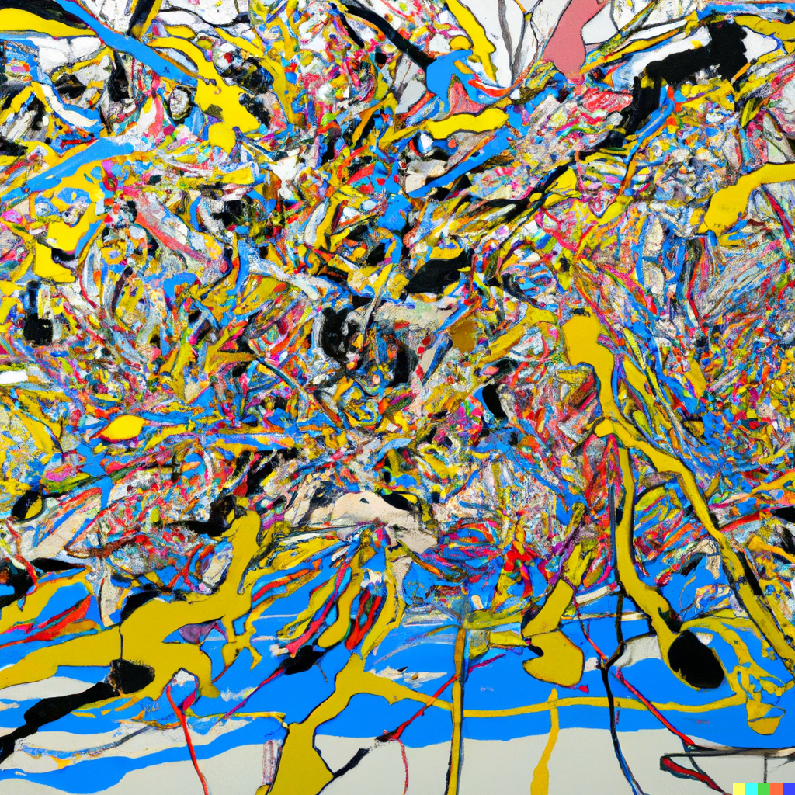
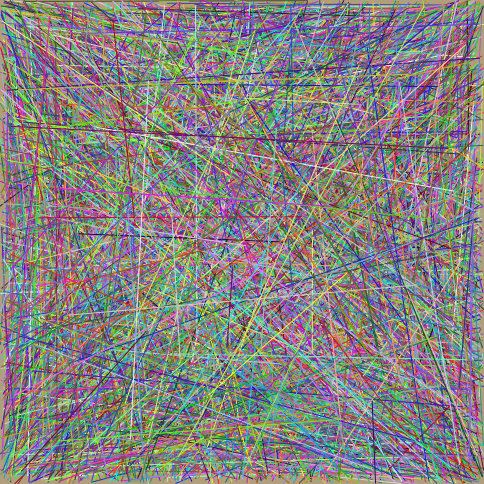

You might have come across OpenAI's DALL-E project.
This is a neural network that can generate images from text descriptions.
However, it disappoints in creating simple, abstract art.
DALL-F creates art inspired by works such as
Convergence and
Composition II with Red, Blue and Yellow.
DALL-F is not only blazingly fast, platform-independent and completely free, but also requires hardly any resources.
In addition, it offers you many customisation options and you can even submit your art to be evaluated by art critics.
All you have to do is fill in the form above. You will receive the result by post within a few weeks.
In a direct comparison, DALL-F generated the following image in 1.4ms, while DALL-E took 14.61s (10'000 times faster).

Convergence by Jackson Pollock

DALL-E creation based on Convergence (14.61s)

DALL-F creation based on Convergence (1.4ms)